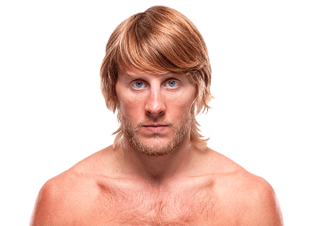

Paddy Pimblett, conocido por su apodo “The Baddy”, es un peleador profesional de artes marciales mixtas originario de Liverpool, Inglaterra. Nació el 3 de enero de 1995 y desde muy joven mostró un gran interés por los deportes de combate. Pimblett comenzó a entrenar artes marciales cuando era adolescente, inspirado por el crecimiento del MMA en el Reino Unido y por grandes peleadores que empezaban a ganar fama internacional. Su carrera comenzó en organizaciones europeas de MMA, donde rápidamente destacó por su estilo agresivo y su capacidad para finalizar combates tanto por sumisión como por nocaut. Desde sus primeras peleas llamó la atención de los fanáticos gracias a su personalidad carismática y su estilo de pelea emocionante, lo que lo convirtió en uno de los peleadores más populares del MMA británico.

Antes de llegar a la UFC, Paddy Pimblett se hizo muy conocido en la organización Cage Warriors, una de las promociones de MMA más importantes de Europa. Allí logró convertirse en campeón de peso pluma, demostrando su talento y consolidándose como uno de los prospectos más prometedores del continente. Su éxito en Cage Warriors llamó la atención de la Ultimate Fighting Championship (UFC), la organización de MMA más importante del mundo. Cuando finalmente firmó con la UFC, su debut generó gran expectativa entre los fanáticos debido a su popularidad y su estilo de pelea agresivo. En sus primeras peleas dentro de la UFC logró victorias impresionantes, muchas de ellas por finalización. Su capacidad para terminar combates rápidamente, junto con su personalidad extrovertida y su conexión con el público, lo han convertido en uno de los peleadores más entretenidos de ver dentro del octágono.
Durante su carrera en las artes marciales mixtas ha competido principalmente en:
Paddy Pimblett es reconocido por varias cualidades dentro del combate:
Además de su talento dentro del combate, Pimblett también es conocido por su carácter abierto y su sinceridad al hablar sobre temas personales. En varias ocasiones ha utilizado su popularidad para hablar sobre la importancia de la salud mental, especialmente entre los hombres jóvenes, lo que ha generado un gran respeto por parte de muchos fanáticos alrededor del mundo.
El estilo de pelea de Paddy Pimblett se caracteriza por ser muy dinámico y ofensivo. En el combate de pie utiliza combinaciones rápidas y ataques agresivos para presionar a sus oponentes. Sin embargo, donde realmente destaca es en el suelo, gracias a su alto nivel en jiu-jitsu brasileño. Una vez que la pelea llega al suelo, Pimblett es extremadamente peligroso, ya que posee un gran repertorio de sumisiones como triángulos, llaves de brazo y estrangulaciones. Esta habilidad lo convierte en un peleador muy completo y difícil de enfrentar dentro del octágono.
Paddy Pimblett se ha convertido en una de las figuras más populares del MMA moderno, especialmente entre los fanáticos europeos. Su estilo entretenido, su confianza antes de las peleas y su capacidad para finalizar combates han hecho que muchos lo consideren una de las futuras estrellas de la UFC. A medida que continúe enfrentando oponentes de mayor nivel, muchos analistas creen que Pimblett tiene el potencial para competir por los puestos más altos dentro de la división de peso ligero.
Otros peleadores que podrían interesarte: